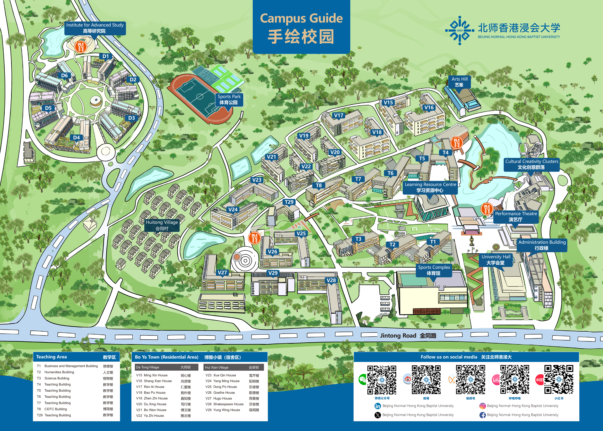

↗
THE INVISIBLE DISTANCE
For BNBU Programming Contest 2026 · Prototype 01
A campus route experiment
One more class · Interactive prototype
The shortest path
isn't always
the easiest.
地图告诉你有多远，却不一定告诉你走过去有多难。选择天气和路线，看看那些“看不见的距离”如何改变你的决定。
你的任务
你还有 10 分钟上课。选一条路线抵达教学楼。你可以追求更短的距离，也可以选择对当前情境更友好的道路。
提示：先切换天气，再比较两条路线。
01 / Campus route map
官方底图 · 路线待实测

地图图片没有加载出来。请确认 index.html 与 assets 文件夹在同一项目目录下。
起点 · 待确认
教学区 · 待确认
A · 较直接（示意）
B · 绕行（示意）
路线 A：较直接（示意）
路线 B：绕行（示意）
底图来自 BNBU 校园导览图。彩色路线、起终点、距离、时间和成本目前均为交互原型，尚未现场核实；不要把它们当作实际导航。
02 / Today's conditions
选择一个情境
☀️
烈日
🌧️
暴雨
🎒
携带行李
露天路段会增加日晒负担。你愿意为了少走一段路而忍受阳光吗？
03 / Choose your route
上课倒计时：10 分钟
路线 A · The Shortcut
7 min
320 m
较多台阶
无遮阳
地图上看起来更直接，但有较高的隐形负担。
路线 B · The Easier Way
10 min
390 m
较少台阶
部分遮阳
多走一点路，换取更舒适的通行体验。
选择路线并出发 →